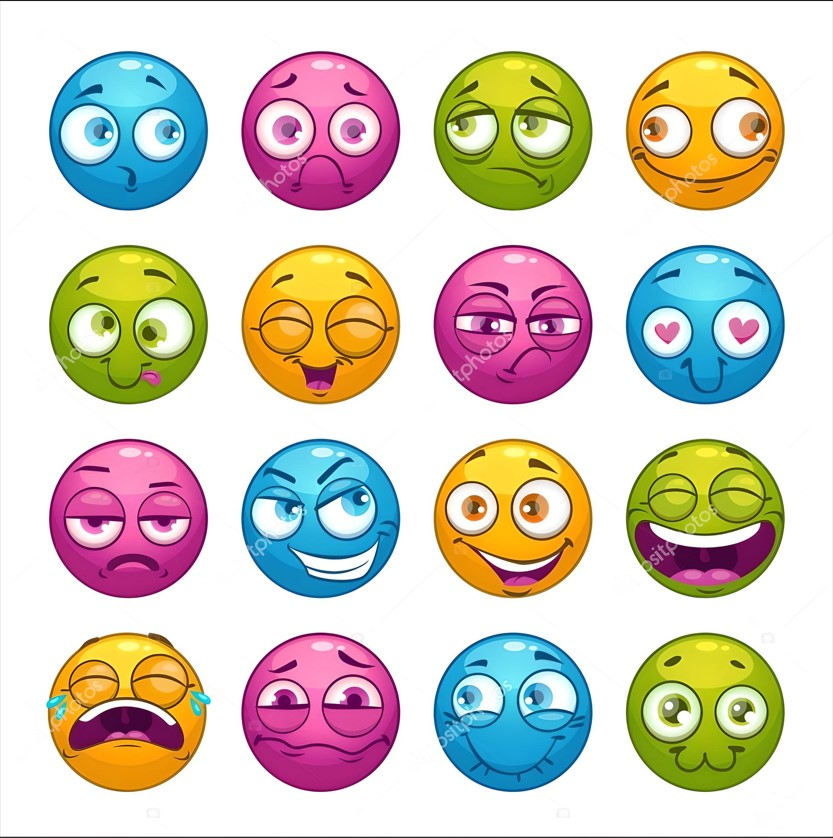

Positiv:
freundlich - przyjazny
hilfsbereit - pomocny
zuverlässig - rzetelny
geduldig - cierpliwy
optimistisch - optymistyczny
kreativ - kreatywny
intelligent - inteligentny
ehrlich - uczciwy
humorvoll - zabawny
selbstbewusst - pewny siebie
offen - otwarty
tolerant - tolerancyjny
mutig - odważny
ehrgeizig - ambitny
fleißig - pracowity
verantwortungsbewusst - odpowiedzialny
Negativ:
unfreundlich - nieprzyjazny
unzuverlässig - nierzetelny
ungeduldig - niecierpliwy
pessimistisch - pesymistyczny
egozentrisch - egocentryczny
dumm - głupi
unehrlich - nieuczciwy
langweilig - nudny
unsicher - niepewny siebie
geschlossen - zamknięty
intolerant - nietolerancyjny
feige - tchórzliwy
faul - leniwy
unverantwortlich - nieodpowiedzialny